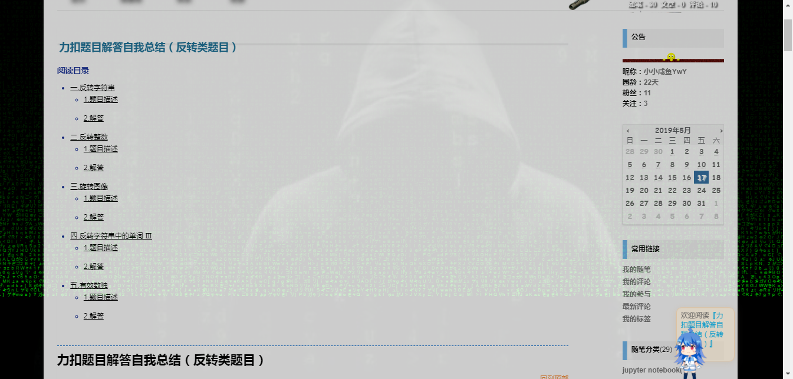

引用https://www.cnblogs.com/cs_net/articles/1930810.html，
个人总结越具体的描述样式所在的位置优先级别越高，外层优先于内层，#>.
如果同个元素有两个或以上冲突的CSS规则，浏览器有一些基本的规则来决定哪一个非常特殊而胜出。
它可能不像其它那么重要，大部分案例你不需要担心冲突，但大型而且复杂的CSS文件，或有很多CSS文件组成的，可能产生冲突。
选择器一样的情况下后面的会覆盖前面的属性。比如：
p { color: red; }
p { color: blue; }
p元素的元素将是蓝色，因为遵循后面的规则。
然而，你不可能经常用相同的选择器冲突达到目的，当你使用嵌套选择器，合理的冲突来了。比如：
div p { color: red; }
p { color: blue; }
也许你看起来p元素在div元素里面的颜色是蓝色，就像后面p元素的规则，但是第一个选择器的特性却是红色。基本上，一个选择器越多特性，样式冲突的时候将显示它的样式。
一组嵌套选择器的实际特性可以计算出来。基本的，使用ID选择器的值是100，使用class选择器的值是10，每个html选择器的值是1。它们加起来就可以计算出特性的值。
p的特性是1（一个html选择器）
div p的特性是2（两个html选择器）
.tree的特性是10（1个class选择器）
div p.tree的特性是1+1+10=12，（两个html选择器，一个class选择器）
#baobab的特性是100（1个ID选择器）
body #content .alternative p的特性是112（两个html选择器，一个ID选择器，一个类选择器）
按照上面的规则，div p.tree的特性比div p高，body #content .alternative p又比它们两个都高。
css优先级的四大原则：写点我自己的总结：
原则一： 继承不如指定
如果某样式是继承来的永远不如具体指定的优先级高。
例子1：
CODE:
<style type=”text/css”>
<!–
*{font-size:20px}
.class3{ font-size: 12px; }
–>
</style>
<span class=”class3″>我是多大字号？</span>
运行结果：.class3{ font-size: 12px; }
例子2：
CODE:
<style type=”text/css”>
<!–
#id1 #id2{font-size:20px}
.class3{font-size:12px}
–>
</style>
<div id=”id1″ class=”class1″>
<p id=”id2″ class=”class2″> <span id=”id3″ class=”class3″>我是多大字号？</span> </p>
</div>
运行结果：.class3{ font-size: 12px; }
注意：后面的几大原则都是建立在“指定”的基础上的。
原则二： #ID >.class >标签选择符
例子：
CODE:
<style type=”text/css”>
<!–
#id3 { font-size: 25px; }
.class3{ font-size: 18px; }
span{font-size:12px}
–>
</style>
<span id=”id3″ class=”class3″>我是多大字号？</span>
运行结果：#id3 { font-size: 25px; }
原则三：越具体越强大。
解释：当对某个元素的CSS选择符样式定义的越具体，层级越明确，该定义的优先级就越高。
CODE:
<style type=”text/css”>
<!–
.class1 .class2 .class3{font-size: 25px;}
.class2 .class3{font-size:18px}
.class3 { font-size: 12px; }
–>
</style>
<div class=”class1″>
<p class=”class2″> <span class=”class3″>我是多大字号？</span> </p>
</div>
运行结果：.class1 .class2 .class3{font-size: 25px;}
原则四：标签#id >#id ; 标签.class >.class
上面这条原则大家应该也都知道，看例子
CODE:
<style type=”text/css”>
<!–
span#id3{font-size:18px}
#id3{font-size:12px}
span.class3{font-size:18px}
.class3{font-size:12px}
–>
</style>
<span id=”id3″>我是多大字号？</span>
<span class=”class3″>我是多大字号？</span>
运行结果：span#id3{font-size:18px} | span.class3{font-size:18px}
很多人会有这样的疑问，为什么不把这个原则四归入原则一形成：
【 标签#ID >#ID >标签.class >.class >标签选择符 >通配符 】 呢？或者将 “标签.class” 看作多更为具体的 “.class” 从而归入原则二呢？后面我将解答各位的疑惑，这就涉及到CSS的解析规律———这四大原则间也是有优先级的，是不是有些糊涂了？别急，继续 看。
*四大原则的权重
相信很多人都知道上面的四大原则，不要以为知道了这四大原则就能分辨css中那条代码是起作用的，不信？那你5秒内能肯定的知道下面这段代码，测试中的文字的字号吗？
CODE:
<style type=”text/css”>
<!–
.class1 p#id2 .class3{font-size:25px}
div .class2 span#id3{font-size:18px}
#id1 .class3{font-size:14px}
.class1 #id2 .class3{font-size:12px}
#id1 #id2{font-size:10px}
–>
</style>
<div id=”id1″ class=”class1″>
<p id=”id2″ class=”class2″> <span id=”id3″ class=”class3″>我是多大字号？</span> </p>
</div>
为了大家方便阅读，我去掉了一些代码。
四大原则的权重就是: 原则一 >原则二 >原则三 >原则四
解释：
首先遵循原则一
有指定开始使用下面的原则，无指定则继承离他最近的定义。
然后开始原则二
1、比较最高优先级的选择符
例子：
CODE:
<style type=”text/css”>
<!–
#id3{font-size:18px}
.class1 .class2 .class3{font-size:12px} /* 描述的再具体也不起作用 — 原则二 */
.class3{font-size:18px}
div p span{font-size:12px}
–>
</style>
<div id=”id1″ class=”class1″>
<p id=”id2″ class=”class2″> <span id=”id3″ class=”class3″>我是多大字号？</span> </p>
</div>
运行结果：#id3{font-size:18px}
删掉上面CSS中的前两行可以得出，如果没有最高级别的#ID会寻找.class 即使后面的CSS按照“原则二” 描述的再具体也无法突破原则一。
2、如果两条CSS的如果最高选择符优先级一样，则比较他们的数量
例子：
CODE:
<style type=”text/css”>
<!–
.class1 #id3{font-size:12px}
.class1 .class2 #id3{font-size:14px}
–>
</style>
<div id=”id1″ class=”class1″>
<p id=”id2″ class=”class2″> <span id=”id3″ class=”class3″>我是多大字号？</span> </p>
</div>
运行结果:.class1 .class2 #id3{font-size:14px}
3、如果最高选择符级别和数量都一样，则按照原则二比较他们下一级，以此类推。
例子1：
CODE:
<style type=”text/css”>
<!–
#id1 .class2 .class3{font-size:14px}
div .class2 #id3{font-size:12px}
–>
</style>
<div id=”id1″ class=”class1″>
<p id=”id2″ class=”class2″> <span id=”id3″ class=”class3″>我是多大字号？</span> </p>
[color=Orange]
运行结果:#id1 .class2 .class3{font-size:14px}
[/color]
*最高级选择符的位置没有高下之分，论证：[code]CODE:
<style type=”text/css”>
<!–
#id1 .class2 .class3{font-size:18px}
.class1 #id2 .class3{font-size:14px}
.class1 .class2 #id3{font-size:12px}
–>
</style>
<div id=”id1″ class=”class1″>
<p id=”id2″ class=”class2″> <span id=”id3″ class=”class3″>我是多大字号？</span> </p>
</div>
上例中更换3条CSS的先后可以得出，哪条位于最后，哪条起作用。说明他们的级别一样，后面的将覆盖前面的。
*将原则四归入原则二的不合理性，论证：
CODE:
<style type=”text/css”>
<!–
.class1 span#id3{font-size:14px}
#id1 .class2 .class3{font-size:12px}
–>
</style>
<div id=”id1″ class=”class1″>
<p id=”id2″ class=”class2″> <span id=”id3″ class=”class3″>我是多大字号？</span> </p>
</div>
#id1 .class2 .class3{font-size:12px}
可以看到span#id3并不比#id1高出一个级别。
无结果开始原则三
如果比较结果，选择符从最高级开始都对应，级别上的数量也相同，则开始比较谁更具体。
例子：
CODE:
<style type=”text/css”>
<!–
#id1 .class2 span{font-size:14px}
.class1 #id3{font-size:12px}
–>
</style>
<div id=”id1″ class=”class1″>
<p id=”id2″ class=”class2″> <span id=”id3″ class=”class3″>我是多大字号？</span> </p>
</div>
#id1 .class2 span{font-size:14px}
当然也可以理解为在原则二层层比较中“少一个层级的样式”，缺少的那个层级没有“层级较多的样式”多出的那个层级的级别高。（绕口令）
*将原则四归入原则三的不合理性，论证：
CODE:
<style type=”text/css”>
<!–
.class2 .class3{font-size:14px}
span.class3{font-size:12px}
–>
</style>
<div id=”id1″ class=”class1″>
<p id=”id2″ class=”class2″> <span id=”id3″ class=”class3″>我是多大字号？</span> </p>
</div>
上例中可以看出，如果将原则四并入原则三，将span.class3看作两层，那么应该和.class2 .class3层级一样多，那么应该显示12px,而事实不是这样。
最终对决原则四
如果还分不出结果，则开始原则四的比较：
例子1：
CODE:
<style type=”text/css”>
<!–
.class1 p.class2 .class3{font-size:14px}
.class1 .class2 .class3{font-size:12px}
–>
</style>
<div id=”id1″ class=”class1″>
<p id=”id2″ class=”class2″> <span id=”id3″ class=”class3″>我是多大字号？</span> </p>
</div>
.class1 p.class2 .class3{font-size:14px}
先看是否描述到该元素，再看最高级别的等级和数量（#id>class，html#id>#id），同级级别&数量一致时，再看下一级属性。
关于背景图片设置
background-color 背景颜色
background-image 背景图片
background-repeat 背景重复
background-attachment 背景图片是固定还是滚动
background-position 背景图片的定位
只设置颜色
div{background:#000}
设置图片为背景
div{background:url(图片路径)}
background-repeat:no-repeat 设置背景图片是否重复平铺
background-position:left top 设置图片的css背景定位，left代表靠左，top代表靠上
横向居中：
background:url(图片地址) no-repeat center top
纵向居中：
background:url(图片地址) no-repeat left 50%
这里50%是随意设置考上为50%距离，细节具体上下垂直居中需要再通过百分比均衡设置
背景图片横向平铺
body{background:url(xxx) repeat-x}
背景图片纵向平铺
background:url(xxx) repeat-y}
全屏页背景图片
body{
background:url(xxx)；
background-size:100% 100%;
}
ont-weight: bold; 字体变圆滑
text-shadow: 2px 2px 3px #222222; 字体凸出来，后面吐出来那一部分颜色
border-radius: 6px 6px 6px 6px; 4个角弯曲
margin: 有4个值顺序为上右下左，调整间距
padding: 0px 0px 0px 0px; 与背景之间的距离 这是我理解哈哈
假设字体设置了背景
height 与width表示背景的宽度和高
`以上为个人理解，我自己学的有些地方理解不到位大神看到了留言说下哈，谢谢